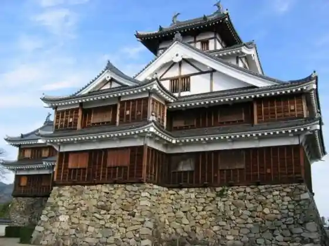
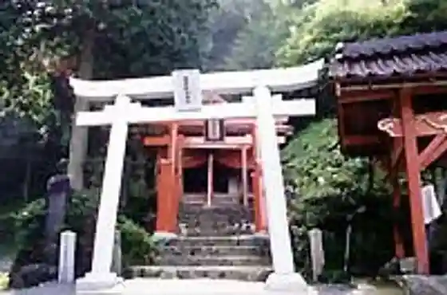
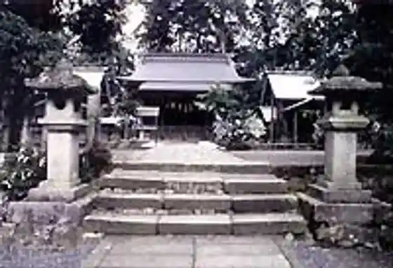

Motoise Ten Iwato Shrine
Fukuchiyama, Kyoto · 0773-56-2070
Fukuchiyama Shiro (Fukuchiyama Shiro Tenshukaku)
Fukuchiyama, Kyoto · 0773-23-9564

Oeyama Onidake Inari Shrine
Fukuchiyama, Kyoto · 0773-56-2070

Hotel Roiyaruhiru Fukuchiyama & Supa (Fuku Sen Gen Yu)
Fukuchiyama, Kyoto · 0773-27-5000

Motoise Gegu Toyoke Dai Shrine
Fukuchiyama, Kyoto · 0773-56-1560

Yura no Garden
Fukuchiyama, Kyoto
Ohara Shrine
Fukuchiyama, Kyoto · 0773-58-4324
Fukuchiyama Tetsudo Kan Fukureru
Fukuchiyama, Kyoto · 0773-48-9226
Motoise Naigu Ko Dai Shrine
Fukuchiyama, Kyoto · 0773-56-1011
Hosono Toge
Fukuchiyama, Kyoto
Futase Kawa Keiryu
Fukuchiyama, Kyoto · 0773-56-2070
Fukuchiyama Zoo (Sandan Ike Park)
Fukuchiyama, Kyoto · 0773-23-4497
Nikoniko Onsen
Fukuchiyama, Kyoto · 0773-23-2525
Yaku no Highlands Shi
Fukuchiyama, Kyoto · 0773-38-0543
Fukuchiyama Tourism Association
Fukuchiyama, Kyoto · 0773-22-2228
Sandan Ike Park
Fukuchiyama, Kyoto · 0773-23-6324
Roadside Station no Takumi no Sato Yaku no (Yaku no Ki to Shitsu no Kan)
Fukuchiyama, Kyoto · 0773-38-9226
Yo Izumi Tera (Tamba Hagi Tera)
Fukuchiyama, Kyoto · 0773-22-3887
Fukuchiyama Onsen Yoro Baths
Fukuchiyama, Kyoto · 0773-27-6000
Ken Tatsuyama Koun Tera
Fukuchiyama, Kyoto · 0773-58-2273
Fukuchiyama Jido Science Museum
Fukuchiyama, Kyoto · 0773-23-6292
Fukuchiyama Miyako City Ryokka Botanical Garden (Sandan Ike Park)
Fukuchiyama, Kyoto · 0773-22-6617
Oeyama no Ie Guriinrojji
Fukuchiyama, Kyoto · 0773-56-0095
Tennei Tera
Fukuchiyama, Kyoto · 0773-33-3448
Kyotodai Ro Garden Terasu (Dai Ro Shizen Kyuyo Village Center)
Fukuchiyama, Kyoto · 0773-33-2041
Roadside Station no Takumi no Sato Yaku no
Fukuchiyama, Kyoto · 0773-37-1103
Towa Shuzo Yugengaisha
Fukuchiyama, Kyoto · 0773-35-0008
Choan Tera (Momiji Tera)
Fukuchiyama, Kyoto · 0773-22-8768
Ubuya
Fukuchiyama, Kyoto · 0773-58-4324
Fukuchiyama Tourism Association Rentasaikuru Jigyo
Fukuchiyama, Kyoto · 0773-22-2228
Washi Densho Kan
Fukuchiyama, Kyoto · 0773-56-2106
Nagata no Kogyo Danchi
Fukuchiyama, Kyoto · 0773-27-2002
Kan'onji (Tamba Ajisai Tera)
Fukuchiyama, Kyoto · 0773-27-1618
Daiun Memorial Museum (Daiun Village / Kyuhei Noe House)
Fukuchiyama, Kyoto · 0773-56-1102
Yaku no Gembu Iwa Park
Fukuchiyama, Kyoto · 0773-37-1103
to Takumi Iori
Fukuchiyama, Kyoto · 0773-22-6527
Hozan Park
Fukuchiyama, Kyoto · 0773-37-1103
Nippon no Oni no Koryu Museum Oni Bunka Kenkyusho
Fukuchiyama, Kyoto · 0773-56-1996
Tensho Yamacho Hashi Tera
Fukuchiyama, Kyoto · 0773-57-0525
Oeyama Onigawara Park
Fukuchiyama, Kyoto · 0773-56-2070
Yakuno Town Kaseki Local History Museum
Fukuchiyama, Kyoto · 0773-38-1206
Shimada Shrine
Fukuchiyama, Kyoto · 0773-24-7065
Fukuchiyama Sato Taisei Kinen Art Museum
Fukuchiyama, Kyoto · 0773-23-2316
Daigo Tera (Fukuchiyama)
Fukuchiyama, Kyoto · 0773-22-2317
Fukuchiyama Ashida Hitoshi Memorial Museum
Fukuchiyama, Kyoto · 0773-27-9445
Fukuchiyama Chisui Memorial Museum
Fukuchiyama, Kyoto · 0773-22-4200
Fukuchiyama Tamba Seikatsu Koromo Kan
Fukuchiyama, Kyoto · 0773-23-6070
Sanwa So
Fukuchiyama, Kyoto · 0773-58-2310
Fukuchiyama Ryokan Hotel Kumiai
Fukuchiyama, Kyoto · 0773-22-1770